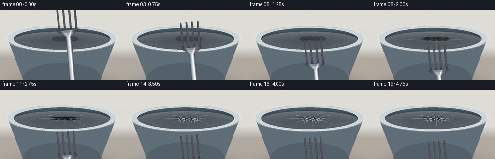
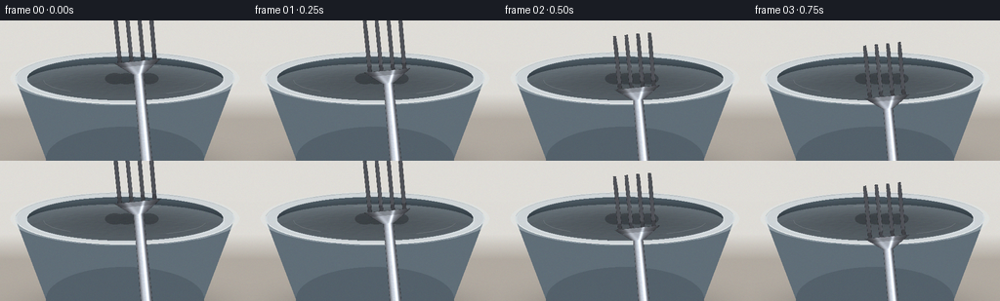

CODING AGENTS AS PIXEL WORLD MODELS
traex/Seed-2.1-Pro-0915 · phygen_023
点击播放 · 原生 RGB 像素
逐轮保存的候选
回放视频、检查图与代码变化。
每份候选均可单独播放。实际图片检查记录在下方工具轨迹中。
候选 01播放与检查图
点击播放 · 原生 RGB 像素


展开代码变化
--- 上一保存版本
+++ 本次保存版本
@@ -0,0 +1,450 @@
+
+import json
+import math
+from pathlib import Path
+
+import numpy as np
+from PIL import Image, ImageDraw
+
+import artifact_io
+
+
+HERE = Path(__file__).parent
+SPEC = json.loads((HERE / "task_spec.json").read_text())
+W, H, N, FPS = SPEC["width"], SPEC["height"], SPEC["frames"], SPEC["fps"]
+SS = 2 # supersampling factor
+
+rng = np.random.default_rng(7)
+
+
+def smoothstep(e0, e1, x):
+ t = np.clip((x - e0) / (e1 - e0), 0.0, 1.0)
+ return t * t * (3 - 2 * t)
+
+
+def keyframe(ts, ys, t):
+ if t <= ts[0]:
+ return ys[0]
+ for i in range(len(ts) - 1):
+ if t <= ts[i + 1]:
+ return ys[i] + (ys[i + 1] - ys[i]) * smoothstep(ts[i], ts[i + 1], t)
+ return ys[-1]
+
+
+# ---------------------------------------------------------------- camera
+CAM = np.array([0.05, 2.55, 5.6])
+TARGET = np.array([0.0, 0.72, 0.0])
+F_PX = W * 1.32 * SS
+CX, CY = W * SS / 2.0, H * SS / 2.0 + 4 * SS
+
+_fwd = TARGET - CAM
+_fwd /= np.linalg.norm(_fwd)
+_right = np.cross(_fwd, np.array([0.0, 1.0, 0.0]))
+_right /= np.linalg.norm(_right)
+_up = np.cross(_right, _fwd)
+
+
+def project(p):
+ p = np.atleast_2d(np.asarray(p, dtype=float))
+ q = p - CAM
+ X = q @ _right
+ Y = q @ _up
+ Z = q @ _fwd
+ sx = CX + F_PX * X / Z
+ sy = CY - F_PX * Y / Z
+ out = np.stack([sx, sy], axis=-1)
+ return out[0] if out.shape[0] == 1 else out
+
+
+# ---------------------------------------------------------------- scene
+Y0 = 1.02 # film / rim height
+RX_I, RZ_I = 1.72, 1.18 # film opening radius
+RX_O, RZ_O = 1.92, 1.34 # outer rim
+
+# fork local frame: u grows from tine tips toward handle
+A = np.array([0.10, -0.98, 0.17])
+A /= np.linalg.norm(A)
+B = np.cross(A, np.array([0.0, 0.0, 1.0]))
+B /= np.linalg.norm(B)
+TINE_V = np.array([-0.30, -0.10, 0.10, 0.30])
+PIERCE_THR = np.array([0.50, 0.57, 0.47, 0.54])
+
+TIP_T = [0, 3, 4.5, 8, 12, 15, 19]
+TIP_Y = [2.25, 1.62, Y0, 0.74, 0.47, 0.30, 0.12]
+
+LIGHT = np.array([-0.45, 0.85, 0.55])
+LIGHT /= np.linalg.norm(LIGHT)
+
+
+def tip_center(frame):
+ y = keyframe(TIP_T, TIP_Y, frame)
+ vib = 0.0
+ if frame > 12:
+ vib = 0.006 * math.sin(frame * 2.3)
+ return np.array([0.12 + vib, y, -0.05])
+
+
+def tine_xz(frame):
+ p0 = tip_center(frame)
+ return [(p0[0] + B[0] * v, p0[2] + B[2] * v) for v in TINE_V]
+
+
+# ---------------------------------------------------------------- noise
+def hash2(x, z):
+ return np.sin(x * 127.1 + z * 311.7) * 43758.5453 % 1.0
+
+
+def vnoise(x, z):
+ xi, zi = np.floor(x), np.floor(z)
+ xf, zf = x - xi, z - zi
+ u = xf * xf * (3 - 2 * xf)
+ v = zf * zf * (3 - 2 * zf)
+ a = hash2(xi, zi)
+ b = hash2(xi + 1, zi)
+ c = hash2(xi, zi + 1)
+ d = hash2(xi + 1, zi + 1)
+ return a + (b - a) * u + (c - a) * v + (a - b - c + d) * u * v
+
+
+# ---------------------------------------------------------------- fork sprite
+def build_fork_canvas():
+ SU = 300
+ Umax = 3.62
+ Vmax = 0.62
+ cw, ch = int(2 * Vmax * SU) + 4, int(Umax * SU) + 4
+ us = (np.arange(ch) + 0.5) / SU
+ vs = (np.arange(cw) + 0.5 - cw / 2) / SU
+ U = np.repeat(us[:, None], cw, axis=1)
+ V = np.repeat(vs[None, :], ch, axis=0)
+ mask = np.zeros((ch, cw), dtype=bool)
+ hw_at = np.zeros((ch, cw))
+
+ # tines
+ for vc in TINE_V:
+ hw = 0.026 + 0.009 * np.clip(U / 0.18, 0, 1)
+ body = (U >= 0) & (U <= 0.92) & (np.abs(V - vc) < hw)
+ cap = (U < 0) & (U > -0.035)
+ cap &= ((U + 0.005) / 0.04) ** 2 + ((V - vc) / 0.035) ** 2 < 1
+ m = body | cap
+ mask |= m
+ hw_at[m] = np.maximum(hw_at[m], hw[m])
+ # shoulder
+ sh = (U > 0.92) & (U <= 1.14)
+ hsh = 0.40 - 0.30 * (U - 0.92) / 0.22
+ m = sh & (np.abs(V) < hsh)
+ mask |= m
+ hw_at[m] = np.maximum(hw_at[m], hsh[m])
+ # handle
+ ha = (U > 1.14) & (U <= 3.50)
+ hha = 0.088 + 0.026 * (U - 1.14) / 2.36
+ m = ha & (np.abs(V) < hha)
+ mask |= m
+ hw_at[m] = np.maximum(hw_at[m], hha[m])
+ end = (U > 3.50) & (((V) / 0.115) ** 2 + ((U - 3.50) / 0.06) ** 2 < 1)
+ mask |= end
+ hw_at[end] = 0.115
+
+ av = np.abs(V)
+ across = np.clip(av / np.maximum(hw_at, 1e-3), 0, 1)
+ shade = 0.40 + 0.60 * np.cos(across * math.pi / 2) ** 1.6
+ stripe = 0.55 * np.exp(-((V + 0.28 * hw_at) / (0.028)) ** 2) + 0.25 * np.exp(
+ -((V - 0.45 * hw_at) / 0.05) ** 2
+ )
+ along = 0.86 + 0.14 * U / Umax
+ brush = 1.0 - 0.06 * (hash2(U * 220, np.zeros_like(U)) - 0.5)
+ g = np.clip((shade * 0.8 + stripe) * along * brush, 0, 1.25)
+ rgb = np.zeros((ch, cw, 3))
+ rgb[..., 0] = 196 * g + 26
+ rgb[..., 1] = 204 * g + 26
+ rgb[..., 2] = 212 * g + 30
+ edge = mask & ~(
+ np.roll(mask, 1, 0) & np.roll(mask, -1, 0) & np.roll(mask, 1, 1) & np.roll(mask, -1, 1)
+ )
+ rgb[edge] *= 0.45
+ root = mask & (U > 0.82) & (U < 1.0)
+ rgb[root] *= 0.8
+ rgba = np.dstack([np.clip(rgb, 0, 255), mask * 255]).astype(np.uint8)
+ return Image.fromarray(rgba, "RGBA")
+
+
+FORK_CANVAS = build_fork_canvas()
+
+
+def perspective_coeffs(dst, src):
+ M = []
+ for (x, y), (u, v) in zip(dst, src):
+ M.append([x, y, 1, 0, 0, 0, -u * x, -u * y])
+ M.append([0, 0, 0, x, y, 1, -v * x, -v * y])
+ rhs = np.asarray(src, dtype=float).reshape(-1)
+ return np.linalg.solve(np.asarray(M), rhs)
+
+
+def fork_layer(frame, size):
+ p0 = tip_center(frame)
+ corners_uv = [(0, -0.62), (0, 0.62), (3.62, 0.62), (3.62, -0.62)]
+ world = np.array([p0 + A * u + B * v for u, v in corners_uv])
+ d = project(world)
+ src = [(0, 0), (FORK_CANVAS.width - 1, 0),
+ (FORK_CANVAS.width - 1, FORK_CANVAS.height - 1),
+ (0, FORK_CANVAS.height - 1)]
+ coeffs = perspective_coeffs(d.tolist(), src)
+ return FORK_CANVAS.transform(size, Image.Transform.PERSPECTIVE, coeffs,
+ Image.Resampling.BICUBIC)
+
+
+# ---------------------------------------------------------------- ellipse helpers
+def ellipse_screen(cx, cy, ax, ay, n=64):
+ a = np.linspace(0, 2 * math.pi, n)
+ return np.stack([cx + ax * np.cos(a), cy + ay * np.sin(a)], axis=1)
+
+
+def ellipse_axes(rx, rz, y):
+ c = project(np.array([0.0, y, 0.0]))
+ pe = project(np.array([rx, y, 0.0])) - c
+ pa = project(np.array([0.0, y, rz])) - c
+ return c[0], c[1], abs(pe[0]), abs(pa[1])
+
+
+# ---------------------------------------------------------------- film
+def film_fields(x, z, frame):
+ """Displacement height and effect fields on the horizontal film."""
+ stretch0 = max(0.0, Y0 - keyframe(TIP_T, TIP_Y, frame))
+ xz = tine_xz(frame)
+ h = np.zeros_like(x)
+ tension = np.zeros_like(x)
+ darkring = np.zeros_like(x)
+ slit = np.zeros_like(x)
+ edgebright = np.zeros_like(x)
+ s_blob = 0.155
+ for i, (xc, zc) in enumerate(xz):
+ dx, dz = x - xc, z - zc
+ r2 = dx * dx + dz * dz
+ g = np.exp(-r2 / (s_blob * s_blob))
+ p = smoothstep(PIERCE_THR[i], PIERCE_THR[i] + 0.11, stretch0)
+ depth = stretch0 * (1 - p) + 0.17 * p
+ h -= depth * g
+ rho2 = r2 / (s_blob * s_blob)
+ h += depth * 0.05 * rho2 * np.exp(1.0 - rho2) * g
+ tension = np.maximum(tension, depth * g)
+ darkring += depth * np.exp(-((np.sqrt(r2) - 0.19) / 0.05) ** 2)
+ if p > 0.0:
+ dh = np.array([A[0], A[2]])
+ dh /= np.linalg.norm(dh)
+ nn = np.array([-dh[1], dh[0]])
+ ql = dx * dh[0] + dz * dh[1]
+ qt = dx * nn[0] + dz * nn[1]
+ jag = 0.75 + 0.5 * vnoise(x * 26 + i, z * 26)
+ hl = (0.02 + 0.10 * p) * (0.7 + 0.6 * vnoise(z * 18 + i * 3, x * 18))
+ hw = (0.006 + 0.052 * p) * jag
+ inside = (ql / np.maximum(hl, 1e-3)) ** 2 + (qt / np.maximum(hw, 1e-3)) ** 2 < 1
+ slit = np.maximum(slit, inside * (0.25 + 0.75 * p))
+ border = np.exp(-((np.abs(qt) - hw - 0.012) / 0.012) ** 2) * (np.abs(ql) < hl + 0.02)
+ edgebright = np.maximum(edgebright, border * p)
+ rn2 = (x / RX_I) ** 2 + (z / RZ_I) ** 2
+ h += -0.02 * np.clip(1 - rn2, 0, 1)
+ amp = 0.0035 + 0.016 * np.clip(tension * 1.6, 0, 1)
+ h += amp * (vnoise(x * 13 + frame * 0.4, z * 13) - 0.5)
+ return h, tension, darkring, slit, np.clip(edgebright, 0, 1)
+
+
+def render_frame(frame):
+ w2, h2 = W * SS, H * SS
+ yy, xx = np.mgrid[0:h2, 0:w2]
+ # background: wall / counter
+ frac = yy / h2
+ wall = np.array([223, 221, 216.0])
+ count = np.array([178, 171, 162.0])
+ horizon = 0.52
+ t = np.clip((frac - horizon) / 0.18, 0, 1)[:, :, None]
+ img = wall * (1 - t) + count * t
+
+ # counter contact shadow
+ bcx, bcy, bax, bay = ellipse_axes(RX_O * 0.95, RZ_O * 0.95, -0.60)
+ sh_d = ((xx - bcx) / (bax * 1.05)) ** 2 + ((yy - bcy - 6 * SS) / (bay * 0.55)) ** 2
+ img *= (1 - 0.32 * np.exp(-sh_d * 1.6))[:, :, None]
+
+ pil = Image.fromarray(np.clip(img, 0, 255).astype(np.uint8))
+ ov = Image.new("RGBA", (w2, h2), (0, 0, 0, 0))
+ d = ImageDraw.Draw(ov)
+
+ # ---- bowl body
+ ocx, ocy, oax, oay = ellipse_axes(RX_O, RZ_O, Y0)
+ fcx, fcy, fax, fay = ellipse_axes(RX_O * 0.78, RZ_O * 0.78, -0.58)
+ a = np.linspace(0, math.pi, 40)
+ rim_front = [(ocx + oax * math.cos(t_), ocy + oay * math.sin(t_)) for t_ in a]
+ base_front = [(fcx + fax * math.cos(t_), fcy + fay * math.sin(t_)) for t_ in a[::-1]]
+ d.polygon(rim_front + base_front, fill=(96, 110, 120, 255))
+ d.ellipse([fcx - fax, fcy - fay, fcx + fax, fcy + fay], fill=(84, 97, 107, 255))
+ d.arc([fcx - fax, fcy - fay, fcx + fax, fcy + fay], 20, 160,
+ fill=(150, 160, 166, 120), width=SS)
+
+ # ---- rim (ceramic)
+ d.ellipse([ocx - oax, ocy - oay, ocx + oax, ocy + oay], fill=(206, 212, 215, 255))
+ d.arc([ocx - oax, ocy - oay, ocx + oax, ocy + oay], 15, 165,
+ fill=(240, 243, 244, 200), width=SS)
+ d.arc([ocx - oax, ocy - oay, ocx + oax, ocy + oay], 185, 350,
+ fill=(150, 158, 164, 160), width=SS)
+
+ # ---- opening / interior
+ icx, icy, iax, iay = ellipse_axes(RX_I, RZ_I, Y0)
+ ix = (xx - icx) / iax
+ iy = (yy - icy) / iay
+ inside = ix ** 2 + iy ** 2 < 1
+ rd = np.sqrt(ix ** 2 + iy ** 2)
+ deep = np.array([26, 32, 37.0])
+ wallc = np.array([66, 78, 86.0])
+ back = np.clip((-iy + 0.25) / 1.1, 0, 1)[:, :, None]
+ interior = deep + (wallc - deep) * (rd[:, :, None] ** 1.4) * (0.4 + 0.9 * back)
+ interior += 10 * np.exp(
+ -(((ix + 0.15) / 0.7) ** 2 + ((iy + 0.55) / 0.35) ** 2))[:, :, None]
+ img = np.asarray(Image.alpha_composite(pil.convert("RGBA"), ov).convert("RGB"), dtype=float)
+ img[inside] = interior[inside]
+
+ # ================= film raymarch =================
+ xc = (xx - CX) / F_PX
+ yc = -(yy - CY) / F_PX
+ rays = (_right[None, None] * xc[:, :, None] + _up[None, None] * yc[:, :, None]
+ + _fwd[None, None])
+ rays /= np.linalg.norm(rays, axis=2, keepdims=True)
+ tt = (Y0 - CAM[1]) / rays[:, :, 1]
+ px_ = pz = None
+ py = np.full((h2, w2), Y0)
+ for _ in range(5):
+ tt = (py - CAM[1]) / rays[:, :, 1]
+ pw = CAM[None, None] + rays * tt[:, :, None]
+ px_, pz = pw[:, :, 0], pw[:, :, 2]
+ hgt, *_ = film_fields(px_, pz, frame)
+ py = Y0 + hgt
+ hgt, tension, darkring, slit, slit_edge = film_fields(px_, pz, frame)
+ dom = (px_ / RX_I) ** 2 + (pz / RZ_I) ** 2 < 0.995
+ hit = dom & (tt > 0)
+
+ eps = 0.018
+ hx = (film_fields(px_ + eps, pz, frame)[0] - film_fields(px_ - eps, pz, frame)[0]) / (2 * eps)
+ hz = (film_fields(px_, pz + eps, frame)[0] - film_fields(px_, pz - eps, frame)[0]) / (2 * eps)
+ N = np.stack([-hx, np.ones_like(hx), -hz], axis=2)
+ N /= np.linalg.norm(N, axis=2, keepdims=True)
+ V = -rays
+ Hv = LIGHT[None, None] + V
+ Hv /= np.linalg.norm(Hv, axis=2, keepdims=True)
+ ndv = np.clip((N * V).sum(2), 0, 1)
+ ndh = np.clip((N * Hv).sum(2), 0, 1)
+ fres = (1 - ndv) ** 2
+ spec = ndh ** 55
+ broad = np.clip((N * LIGHT[None, None]).sum(2), 0, 1)
+
+ base = img
+ milky = np.array([222, 232, 238.0])
+ a_milk = np.clip(0.09 + 0.62 * fres + 0.10 * broad, 0, 0.9)
+ col = base * (1 - a_milk[:, :, None] * 0.5) + milky * (a_milk[:, :, None] * 0.5)
+ stretch_dark = np.clip(tension * 1.5, 0, 0.65)
+ col *= (1 - stretch_dark * 0.55)[:, :, None]
+ col *= (1 - np.clip(darkring, 0, 1) * 0.25)[:, :, None]
+ col += (spec * 235)[:, :, None] * (0.45 + fres[:, :, None])
+ col += np.clip(broad - 0.7, 0, 1)[:, :, None] * 40
+ col += slit_edge[:, :, None] * 150
+ cover = hit & (slit < 0.35)
+ img = np.where(cover[:, :, None], col, base)
+
+ pil = Image.fromarray(np.clip(img, 0, 255).astype(np.uint8)).convert("RGBA")
+ ov = Image.new("RGBA", (w2, h2), (0, 0, 0, 0))
+ d = ImageDraw.Draw(ov)
+
+ # ---- wrap folded over the rim
+ outer = ellipse_screen(ocx, ocy, oax * 1.045, oay * 1.045, 80)
+ inner = ellipse_screen(ocx, ocy, oax * 0.99, oay * 0.99, 80)[::-1]
+ d.polygon([tuple(p) for p in outer] + [tuple(p) for p in inner],
+ fill=(226, 234, 238, 90))
+
+ # ---- contact shadow at tips
+ stretch0 = max(0.0, Y0 - keyframe(TIP_T, TIP_Y, frame))
+ if stretch0 < 0.55 or frame < 13:
+ xz = tine_xz(frame)
+ for xc_, zc_ in xz:
+ s = project(np.array([xc_, Y0 - 0.02, zc_]))
+ rr = 10 * SS * (1 - min(stretch0, 0.5) * 0.8)
+ a_g = int(70 + 120 * min(stretch0 * 1.6, 1))
+ d.ellipse([s[0] - rr, s[1] - rr * 0.55, s[0] + rr, s[1] + rr * 0.55],
+ fill=(10, 12, 14, a_g))
+
+ pil = Image.alpha_composite(pil, ov)
+
+ # ================= wrinkles =================
+ wov = Image.new("RGBA", (w2, h2), (0, 0, 0, 0))
+ wd = ImageDraw.Draw(wov)
+ xz = tine_xz(frame)
+ cc = np.array([np.mean([p[0] for p in xz]), np.mean([p[1] for p in xz])])
+ tension0 = min(stretch0 / 0.6, 1.0)
+ rng2 = np.random.default_rng(21)
+ crease_angles = np.linspace(0, 2 * math.pi, 9, endpoint=False) + 0.2
+ for k, ang in enumerate(crease_angles):
+ length = 0.55 + 0.35 * rng2.random()
+ pts = []
+ for j in range(7):
+ r = 0.13 + length * j / 6
+ wx = cc[0] + math.cos(ang) * r + 0.012 * math.sin(j * 2.1 + k)
+ wz = cc[1] + math.sin(ang) * r + 0.012 * math.cos(j * 1.7 + k)
+ if (wx / RX_I) ** 2 + (wz / RZ_I) ** 2 < 0.95:
+ pts.append(tuple(project(np.array([wx, Y0 + 0.004, wz]))))
+ if len(pts) >= 2 and tension0 > 0.08:
+ a_w = int(150 * tension0 * (0.5 + 0.5 * rng2.random()))
+ wd.line(pts, fill=(245, 250, 252, a_w), width=max(1, SS - 1))
+ # static rim creases
+ for arc_a0, arc_a1 in [(0.3, 1.1), (2.2, 3.0), (4.4, 5.2)]:
+ pts = []
+ for j in range(8):
+ aa = arc_a0 + (arc_a1 - arc_a0) * j / 7
+ wx = RX_I * 0.82 * math.cos(aa)
+ wz = RZ_I * 0.82 * math.sin(aa)
+ pts.append(tuple(project(np.array([wx, Y0 + 0.003, wz]))))
+ wd.line(pts, fill=(255, 255, 255, 38), width=1)
+
+ # ---- torn flaps + stretched threads
+ dh = np.array([A[0], A[2]])
+ dh /= np.linalg.norm(dh)
+ nn = np.array([-dh[1], dh[0]])
+ for i, (xc_, zc_) in enumerate(xz):
+ p = smoothstep(PIERCE_THR[i], PIERCE_THR[i] + 0.11, stretch0)
+ if p <= 0.05:
+ continue
+ hl = 0.02 + 0.10 * p
+ hw = 0.006 + 0.05 * p
+ for side in (-1, 1):
+ base_w = np.array([xc_, zc_]) + nn * hw * side
+ tip = base_w + dh * hl * (0.7 + 0.4 * rng2.random()) * (1 if i % 2 else -1)
+ tipw = base_w + nn * hw * 0.2 * side
+ p1 = project(np.array([base_w[0], Y0 - 0.02, base_w[1]]))
+ p2 = project(np.array([tip[0], Y0 - 0.12 - 0.05 * p, tip[1]]))
+ p3 = project(np.array([tipw[0], Y0 - 0.02, tipw[1]]))
+ wd.polygon([tuple(p1), tuple(p2), tuple(p3)], fill=(235, 240, 243, int(150 * p)))
+ if p < 0.85:
+ for th in (-0.4, 0.35):
+ q = np.array([xc_, zc_]) + dh * hl * th
+ pts = []
+ for j in range(5):
+ s2 = -1 + 2 * j / 4
+ wpt = q + nn * (hw * s2)
+ pts.append(tuple(project(np.array(
+ [wpt[0], Y0 - 0.03 - 0.02 * (1 - abs(s2)), wpt[1]]))))
+ wd.line(pts, fill=(250, 252, 253, int(180 * (1 - p))), width=1)
+
+ pil = Image.alpha_composite(pil, wov)
+
+ # ================= fork =================
+ fk = fork_layer(frame, (w2, h2))
+ pil = Image.alpha_composite(pil, fk)
+
+ arr = np.asarray(pil.convert("RGB"), dtype=float)
+ arr += rng.normal(0, 2.2, arr.shape)
+ out = np.clip(arr, 0, 255).astype(np.uint8)
+ return np.asarray(Image.fromarray(out).resize((W, H), Image.Resampling.LANCZOS))
+
+
+def main():
+ frames = [render_frame(i) for i in range(N)]
+ artifact_io.save(frames, HERE)
+ print("saved", N, "frames to", HERE)
+
+
+if __name__ == "__main__":
+ main()
可观测工具轨迹
实际执行的命令与返回图片。
命令 1exit 0
/bin/bash -lc 'cat prompt.txt; echo "=====RULES====="; cat GENERATION_RULES.md; echo "=====SPEC====="; cat task_spec.json; echo "=====LS====="; ls -la'
命令 2exit 0
/bin/bash -lc 'cat artifact_io.py'
命令 3exit 0
/bin/bash -lc 'cd . && time python generate.py'
视觉工具实际返回图片 1

保存候选 1 份；完成命令 3 次；可验证图片返回 1 张。原始 API 响应与完整日志保留在本地。